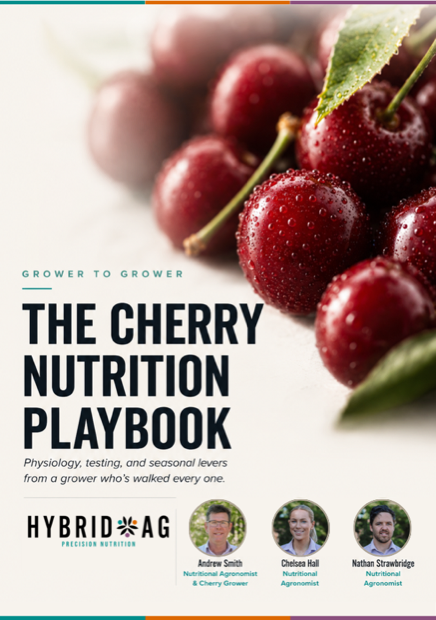
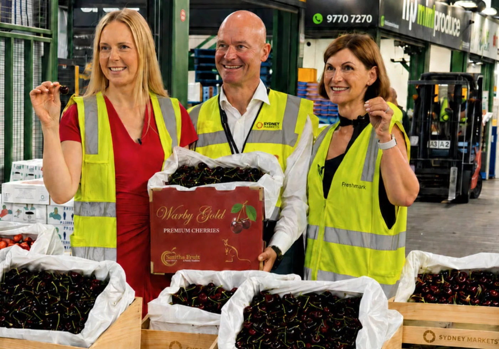

Marketable yield
The total weight picked does not show how much fruit meets the buyer’s grade.

We work with you on cherry nutrition from post-harvest and dormancy through to flowering, set and fruit development. Your test results and the history of the block help us develop prescription blends for the trees at each stage.
Fruit size and firmness come first when we plan your prescription nutrition. We use your block’s test results and orchard history to plan for the grade and pack-out you need.
The total weight picked does not show how much fruit meets the buyer’s grade.
Fruit size and the spread of sizes across the block are assessed against the grade you are aiming for.
Fruit firmness and physical condition matter at harvest, through packing and on to sale.
Pack-out shows how much fruit meets the required grade. Shelf life matters because the fruit must hold its condition after picking.
Before preparing a prescription, we discuss your test results and the history of the block. We then work with you on what can be addressed with the equipment and budget available.
The market you supply determines the specification the fruit needs to meet. Size, grade and condition after picking help define the production target.
We need to know the variety, actual growth stage and crop load, as well as the condition of the canopy.
Root-zone conditions and the water supply help explain the soil results. We need to know the water source and quality, and how the block is irrigated.
Previous tests, applications and growing conditions help explain changes through the season. Harvest results and the condition of the trees after picking are useful when planning the next prescription.
The trees do not follow the same dates every season. We use their stage of growth to interpret the results and time the recommendation for your block.
The harvest results help us assess the block and consider the tree’s reserves and conditions before next season.
Review the season’s results, soil conditions and tree health as leaves senesce and the trees enter dormancy.
Early growth draws on the tree’s stored reserves as flowering begins.
Review crop load and early fruit development during set and cell division.
The team reviews water supply, canopy condition, Nutrient uptake and crop load as the fruit develops, with the intended market’s specification in mind.
Use pack-out, quality and condition data when planning for the next season.
We look at the current results with you, then work back through the season. This helps us understand what has changed and what the next prescription needs to address.
Crop stage, variety, crop load, recent conditions and the soil, water, plant or fruit evidence available today.
Previous test results, post-harvest condition, changes through the season and application history.
Agree on what needs attention now, what can wait and what needs checking.
Soil and root-zone conditions that affect Nutrient access and uptake.
Quality and delivery across irrigation, fertigation and foliar work.
Plant test results interpreted against stage, growth and crop load.
What the harvest showed and what left the block with the crop.
The playbook explains how cherry trees develop through the season and how we use testing to guide nutrition at each stage.
Read the playbookReview draft: visitors will provide their contact details to receive this booklet when the website launches. Downloads remain open here while the website is being reviewed.


Andrew Smith leads Hybrid-Ag’s cherry work with both grower and agronomic experience. The wider team considers field observations, tests and seasonal conditions alongside fruit quality after harvest.